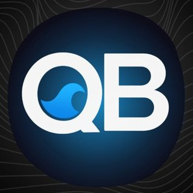

QB-Sentinel
التشغيل والمطاعم والمخزونوداعًا لأوراق التشغيل اليومية
في محلات العصائر تتراكم الأوراق كل يوم: كشوف الحضور، وسجلات الفحص والتنظيف، وتقارير نهاية اليوم، فتضيع المعلومة وتتأخر المتابعة. وُلد QB-Sentinel من واقع العمل في عصير تايم ليجمع كل ذلك في تطبيق واحد على الجوال؛ فيعرف المدير ما يحدث في الفرع أولًا بأول، ولا يفوته موعد تجديد إقامة أو عقد، وتبقى معايير الجودة موثّقة في كل وردية.
المزايا
- حضور وانصراف الموظفين، وتذكير بتجديد الإقامات والعقود.
- سجلات فحص الفواكه، ومعايير المكونات، وتنظيف المعدات.
- متابعة توفر المنتجات، وطلبات الاسترجاع، وتصنيع المواد الأولية.
- تقرير نهاية اليوم، وسند صرف النقدية.
KDSQB-Prax
التشغيل والمطاعم والمخزون
طلبات المطبخ على الشاشة، بلا أجهزة استدعاء
الفواتير المطبوعة وأجهزة الاستدعاء تُبطئ المطبخ في أوقات الذروة وتُربك ترتيب الطلبات. يحوّل QB-Prax المطعم الذي يعمل بنظام فوديكس إلى مطبخ رقمي دون تغيير نظام نقاط البيع: يلتقط الفاتورة لحظة طباعتها ويعرض الطلب على شاشة المطبخ تلقائيًا، فيعرف الفريق ما يجهّزه أولًا، ويقل الخطأ ووقت انتظار العميل.
المزايا
- يلتقط بيانات الطباعة من طابعة Epson عبر الشبكة.
- يعيد بناء صورة الفاتورة ويقرأ رقم الطلب بالتعرف الضوئي (OCR).
- يعرض الطلبات تلقائيًا على شاشة المطبخ بدل أجهزة الاستدعاء.
FLQB-FLOW
التشغيل والمطاعم والمخزون
مطعمك أو شركتك في منصة واحدة
تتوزع أعمال المطاعم والشركات بين برامج كثيرة لا يتحدث بعضها مع بعض، فتضيع البيانات بينها ويضيع وقت الفريق في التنقل. يجمع QB-FLOW الإدارة ومركز الاتصال والعملاء وقائمة الطعام والاستقبال في منصة واحدة، لتصبح الصورة كاملة أمام الإدارة ويخدم الفريق العميل بسرعة أكبر.
المزايا
- لوحة إدارة.
- مركز اتصال.
- إدارة العملاء.
- قائمة طعام إلكترونية.
- الاستقبال.
DNQB-Dine
التشغيل والمطاعم والمخزون
أبعد من قائمة طعام، أبعد من المألوف
منصة رقمية حديثة للمطاعم تغيّر طريقة عرض المنتجات، والتعامل مع العملاء، وتنظيم العمل اليومي. من قائمة الطعام الرقمية التفاعلية إلى واجهة الكاشير ولوحة الإدارة، يجمع QB-Dine أدوات المطعم الأساسية في تجربة واحدة مترابطة. لأن قائمة الطعام يجب أن تفعل أكثر من عرض المنتجات: يمنح QB-Dine عملاء المطعم تجربة رقمية جذابة، ويبسّط على فريقه العمل اليومي بتقنيات ويب حديثة وسهلة الوصول. منصة واحدة، تجربة أفضل، وتشغيل أذكى.
المزايا
- قائمة طعام رقمية تفاعلية.
- واجهة كاشير للمطعم.
- لوحة إدارة مركزية.
- قائمة طعام عبر رمز QR مناسبة للجوال.
- تطبيق ويب تقدّمي (PWA).
- دعم المنتجات لعدة فروع.
- مكوّنات للربط مع الطابعات.
- واجهة متجاوبة مع كل الشاشات.
STQB-Stocky
التشغيل والمطاعم والمخزون
اعرف ما في مخزونك بنظرة واحدة
نقص صنف يوقف البيع، وتكدّسه يجمّد المال. QB-Stocky نظام مخزون بسيط وواضح يساعدك على معرفة ما لديك وما تحتاجه في أي لحظة، بواجهة مريحة للعين في الوضعين الفاتح والداكن.
المزايا
- إدارة أصناف المخزون.
- ثيم فاتح وداكن.
- شاشات للعرض والإعدادات وميزات إضافية.
SLQB-Storelytics
التشغيل والمطاعم والمخزون
حوّل ملفات المخزون إلى قرارات
ملفات حركة المخزون مليئة بالأرقام التي نادرًا ما يقرؤها أحد. ارفع الملفين، ويحلّلهما QB-Storelytics ليعرض لك الصورة بوضوح، فتبني قرارات الشراء والتخزين على البيانات لا على التخمين.
المزايا
- رفع ملف حركة المخزون وملف مواد المخزون.
- عرض نتائج التحليل مباشرة.
WMSQB-WMS
التشغيل والمطاعم والمخزون
تتبّع كل حركة في مستودعك
في المستودع، كل صنف يدخل أو يخرج دون تسجيل هو خسارة محتملة. يسجّل QB-WMS حركة الأصناف ووجهتها وتاريخها ويعرضها في لوحة واحدة، لتعرف أين ذهب كل شيء ومتى.
المزايا
- لوحة تحكم لحركة الأصناف.
- اسم الصنف، ونوع الحركة، والوجهة، والتاريخ.
FIFoem-Inspection-Oven
التشغيل والمطاعم والمخزون
فحص الفواكه ومخزونها بلا هدر
الفواكه تتلف بسرعة، وكل تأخير في فحصها يعني هدرًا وخسارة. نسخة تجريبية تنظّم مخزون الفواكه وفحصها، لتحافظ على الجودة وتقلل التالف.
المزايا
- إدارة مخزون الفواكه (Fruit Inventory Manager).
- تسجيل عمليات الفحص.
اعرف ربح الصفقة قبل أن تعرضها
حساب صفقة تمويل سيارة يدويًا يتطلب أرقامًا كثيرة: سعر البنك، والضريبة، واللوحات، والكاش باك، والدعم، وأي خطأ صغير يضيّع الربح أو العميل. يحسب QB-Nexa كل ذلك في ثوانٍ، ويُظهر صافي الربح بوضوح، ويجهّز رسالة العرض للعميل جاهزة للإرسال، فيُغلق موظف المبيعات الصفقة أسرع وبثقة. استُخدم فعليًا في معرض سيارات.
المزايا
- السعر المرفوع للبنك، والسعر شامل الضريبة.
- رسوم اللوحات والخدمات.
- نسب الكاش باك والدعم، وصافي الربح.
- رسالة جاهزة للعميل، ومحفظة، وصندوق أدوات.
EPQB-Eligibility Pro
المالية والتمويل
اعرف أي بنك سيقبل عميلك قبل أن تقدّم الطلب
لكل بنك شروطه، وتقديم طلب عميل إلى بنك لن يقبله يضيّع أيامًا من الانتظار ويُضعف ثقة العميل. يقارن QB-Eligibility Pro بيانات العميل بشروط كل بنك ويعرض النتيجة فورًا، فتوجّه العميل إلى البنك المناسب من المرة الأولى.
المزايا
- قائمة بنوك ومحرّر لشروط كل بنك وقواعده.
- إدخال بيانات العميل وحقول مخصصة.
- عرض النتائج فورًا، والبيانات محفوظة على الجهاز.
INQB-Invoice
المالية والتمويل
فواتير احترافية في دقائق
الفواتير اليدوية تأخذ وقتًا وتتعرض للأخطاء وتضيع مع الوقت. يُنشئ QB-Invoice (InvoiceFlow) الفواتير ويديرها في مكان واحد، فيبدو عملك أكثر احترافية وتتابع مستحقاتك بسهولة.
المزايا
- إنشاء الفواتير.
- إدارة الفواتير في مكان واحد.
LGQB-Ledg
المالية والتمويل
كل ريال من العهدة له سجل
العهد النقدية من أكثر ما يسبب ضياع المبالغ والخلافات عند التسوية، وقد عشت هذه المشكلة بنفسي في إدارة المشتريات، فصنعت QB-Ledg لحلها. يسجّل كل عهدة وما صُرف منها، ويُخرج تقارير جاهزة للطباعة، فتصبح التسوية سهلة وواضحة للطرفين.
المزايا
- إضافة العهد وتسجيل المصروفات عليها.
- ملخص عام وتقرير لكل عهدة.
- طباعة التقارير.
FNQB-FinanceLog
المالية والتمويل
اعرف أين يذهب مالك
كثيرون لا يعرفون كم صرفوا حتى ينتهي الشهر. يساعدك QB-FinanceLog على تسجيل مصاريفك ومتابعتها أولًا بأول، لتتحكم في ميزانيتك بدل أن تتحكم بك.
المزايا
- تسجيل دخول.
- تسجيل المصروفات ومتابعتها.
NOQB-Nomia
المالية والتمويل
محفظتك المالية في جيبك
الحسابات والاشتراكات والسلف تتوزع في أماكن كثيرة فتُنسى أو تتأخر. يجمعها QB-Nomia في تطبيق واحد أنيق على الجوال، بتصميم هادئ بالأسود والرمادي والأبيض وإيماءات سحب سريعة، لتعرف وضعك المالي في لحظة.
المزايا
- إدارة الحسابات والمصاريف والاشتراكات والسلف.
- هوية «Nomia Mono» وإيماءات سحب.
- يعمل كتطبيق PWA وتطبيق أندرويد.
COQB-CooRbit
الإدارة والإنتاجية
كل مشاريعك وفروعك في لوحة واحدة
حين تدير أكثر من فرع أو مشروع، تضيع المتابعة بين المكالمات والرسائل. يعرض QB-CooRbit نظرة شاملة على المشاريع وآخر النشاطات وأعضاء الفريق، فتعرف ما يحدث في كل مكان دون أن تسأل.
المزايا
- تسجيل دخول.
- لوحة تحكم: نظرة عامة على المشاريع، وآخر النشاطات، وأعضاء الفريق.
- صفحات للفروع والمشاريع.
CDQB-Code
الإدارة والإنتاجية
متجر المنتجات الرقمية تحت السيطرة
بيع المنتجات الرقمية يعني عشرات الأصناف والموردين والأسعار المتغيرة. مركز التحكم «الواحة الرقمية» يجمع المنتجات والموردين مع آلة حاسبة للتسعير، لتدير متجرك الرقمي بسرعة ودون أخطاء.
المزايا
- إدارة منتجات رقمية: ويندوز، أوفيس، إكس بوكس، أدوبي، الألعاب، قنوات البث.
- آلة حاسبة.
- إدارة الموردين.

QB-BluePulse
الإدارة والإنتاجيةمسبح نظيف دائمًا، بلا مهام منسية
صيانة المسبح تعتمد على الانتظام، ومهمة منسية أو جرعة كيميائية خاطئة تعني مياهًا غير آمنة. يضع QB-BluePulse جدول صيانة شهريًا واضحًا، ويتابع ما أُنجز، ويحسب كميات المواد الكيميائية بدقة، وكل ذلك من الجوال.
المزايا
- جدول صيانة شهري (4 أسابيع) بمهام محددة.
- تتبع المهام المكتملة.
- حساب كميات المواد الكيميائية المطلوبة.
- مصمم للجوال.
MIQB-Milee
الإدارة والإنتاجية
سيارتك تخبرك متى تحتاج الصيانة
مصاريف الوقود ومواعيد الصيانة تُنسى بسهولة حتى يقع العطل. يسجّل QB-Milee الوقود والصيانة لكل مركبة وينبّهك بمواعيدها، ويعرض استهلاك كل مركبة لتعرف تكلفتها الحقيقية.
المزايا
- سجل الوقود: العداد، والكمية، والسعر، والتكلفة.
- سجل الصيانة مع تنبيهات.
- ملخص استهلاك كل مركبة.
POQB-Pomodoro
الإدارة والإنتاجية
ركّز أكثر، وأنجز أكثر
التشتت هو العدو الأول للإنتاجية. يقسّم QB-Pomodoro وقتك إلى فترات عمل وراحة، وينظّم مهامك حسب نوعها، ويعرض إحصائيات إنجازك وسلسلة أيامك المتتالية لتبقى متحفزًا.
المزايا
- أوقات عمل وراحة قابلة للتخصيص.
- مهام مصنفة: عمل، دراسة، شخصي.
- إحصائيات الوقت الإجمالي والمهام المكتملة وسلسلة الإنجاز.
CIQB-Cipher
أدوات وتطبيقات
محادثاتك لك وحدك
الخصوصية ليست رفاهية. يشفّر QB-Cipher الرسائل قبل إرسالها ويتحقق من سلامتها، فلا يقرؤها أحد غير المشاركين في الغرفة.
المزايا
- غرف دردشة بمعرّف.
- تشفير الرسائل بمفتاح AES-GCM.
- التحقق من سلامة الرسائل بمفتاح HMAC-SHA256.
كم يعرفك أصدقاؤك فعلًا؟
طريقة ممتعة لكسر الروتين مع الأصدقاء: أنشئ اختبارًا عن نفسك، وأرسل الرابط، وشاهد من يعرفك أكثر.
المزايا
- اختبار شخصي من أسئلة جاهزة أو مخصصة.
- رابط للمشاركة مع الأصدقاء.
- عرض النتائج.
رموز QR بهوية نشاطك
رمز QR العادي لا يعكس هوية نشاطك. يولّد QB-QR رموزًا قابلة للتخصيص، لتربط عملاءك بمحتواك بلمسة تشبهك.
المزايا
- توليد رموز QR.
- تخصيص شكل الرموز.